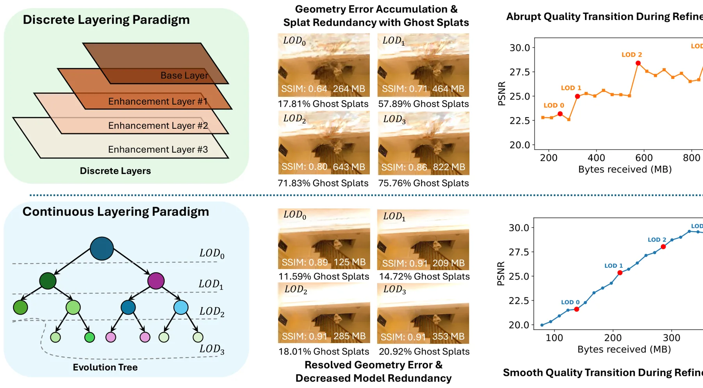
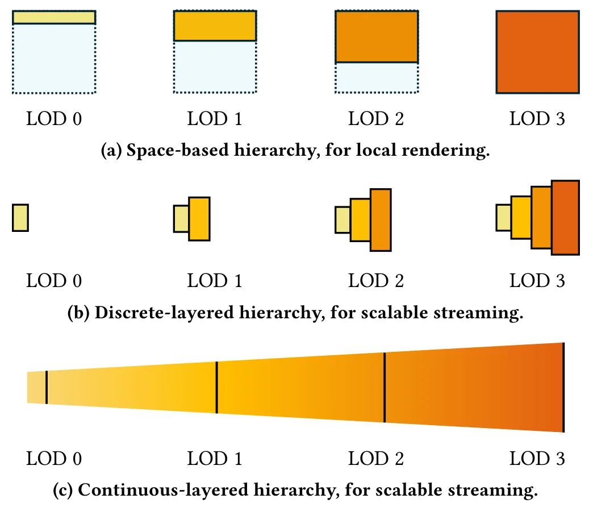
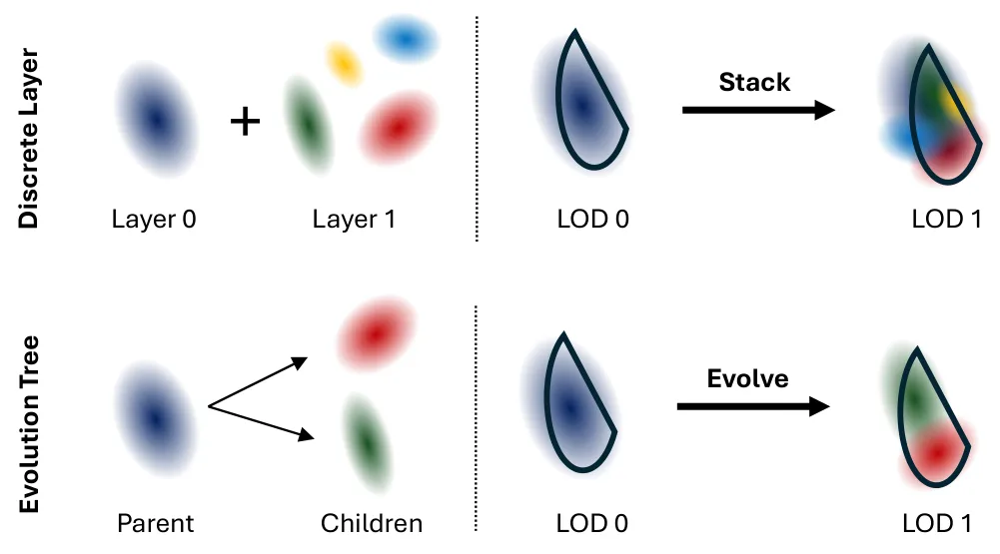
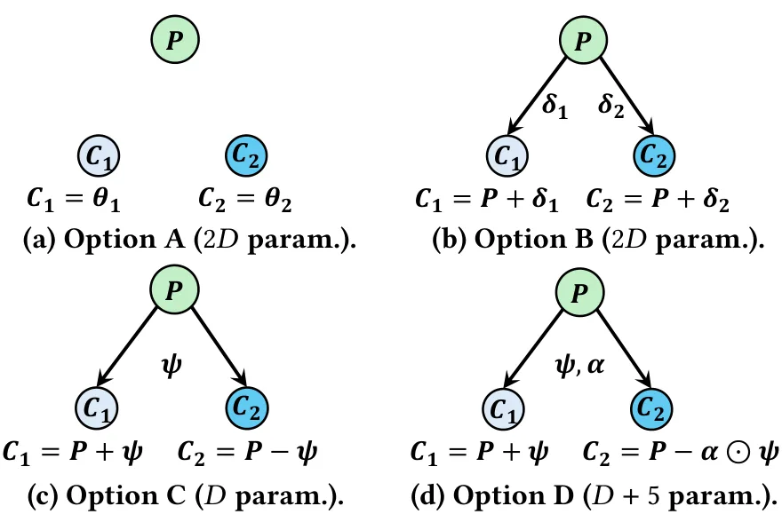
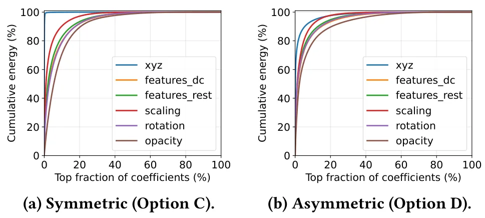
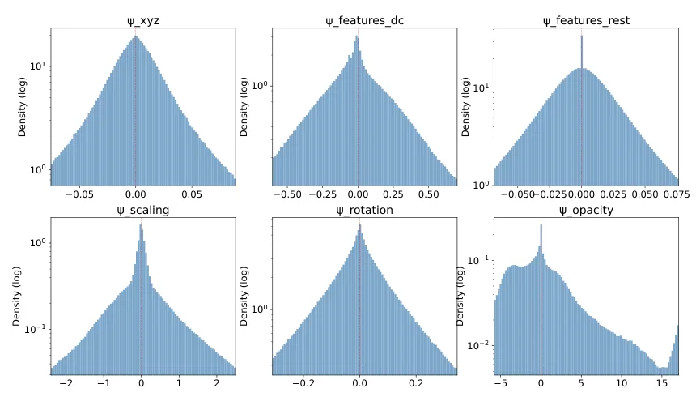
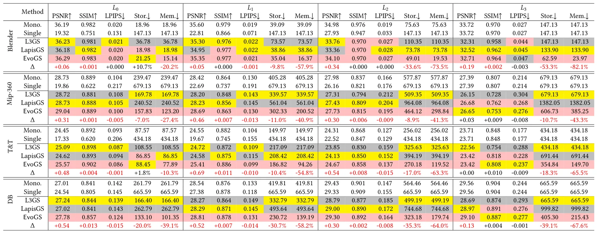
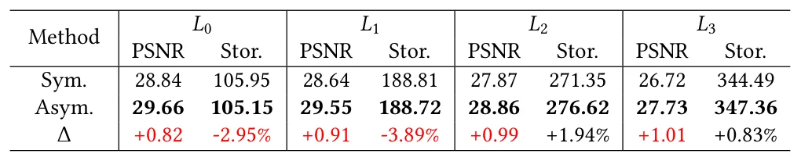

EvoGS：用演化树构建可扩展 3D 流媒体的连续层级高斯溅射EvoGS: Constructing Continuous-Layered Gaussian Splatting with Evolution Tree for Scalable 3D Streaming
与 3DGS 大场景地图压缩、渐进传输和实时浏览高度相关；指标给出明确的冗余、payload 与 VRAM 改进，项目页也已公布。
一句话工作总结
EvoGS 用演化树把渐进式 3DGS 从离散 LoD 改为连续可修正层级，显著降低冗余、带宽和显存。
摘要
流式 3D Gaussian Splatting 需要高度可扩展、可渐进传输的表示。现有渐进方法通常依赖离散分层，为每个细节层维护独立 splat 集合，这种层间结构独立性会造成误差累积、严重 splat 冗余和不可控的质量跳变。EvoGS 提出首个连续分层表示，把场景组织为 Evolution Tree，通过类似小波的父子细化显式生成更细节层，使子节点能够修正祖先误差，并形成稀疏、易压缩的层间信号。实验显示，EvoGS 将 splat 冗余从超过 65% 降至低于 25%，相对 SOTA 最高降低 2.4 倍传输负载和 5.5 倍 GPU 显存，并实现适合实时自适应流媒体的平滑质量过渡。
Streaming 3D Gaussian Splatting requires highly scalable, progressive representations. Existing progressive methods rely on \textit{discrete layering}, accumulating separate splat sets for each level of detail. This structural independence between layers inherently leads to error accumulation, severe splat redundancy, and uncontrolled quality transitions. We propose EvoGS, the first \textit{continuous-layering} representation. Organized as an Evolution Tree, EvoGS generates finer details via an explicit, wavelet-inspired parent-child refinement. This empowers child nodes to structurally correct ancestral errors, yield inherently sparse and highly compressible inter-layer signals. Extensive experiments show EvoGS eliminates splat redundancy from over 65\% to under 25\%. Compared to state-of-the-art baselines, it reduces transmission payload and GPU VRAM footprint by up to 2.4$\times$ and 5.5$\times$, respectively, and achieves smooth quality transitions optimal for real-time adaptive streaming. Project page: https://yuang-ian.github.io/evogs/
中文解读摘录
- 作者：Yuang Shi, Simone Gasparini, Géraldine Morin, Wei Tsang Ooi；类别：cs.CV / cs.MM / eess.IV；发布日期：2026-06-05；采集 score=11
- 核心问题：现有渐进式 3DGS 多采用离散 LoD 层，每层维护独立 splat 集合，容易导致误差累积、splat 冗余和质量跳变。
- 方法亮点：提出连续层级
Evolution Tree，以 wavelet-like parent-child refinement 让子节点显式修正祖先层误差，从而形成稀疏、可压缩的层间信号。 - 结果信号：论文称 splat 冗余从超过 65% 降至低于 25%，传输 payload 最高降低 2.4×，GPU VRAM 最高降低 5.5×，适合实时自适应 3DGS streaming。
- 关注价值：如果工程实现稳定，这类连续 LoD/流式表示可用于移动机器人/远程巡检中的大场景 3DGS 地图分发与带宽自适应浏览。
图表/页面预览
{kind=link}

{kind=link}

{kind=link}

{kind=link}

{kind=link}

{kind=link}

{kind=link}

{kind=link}
